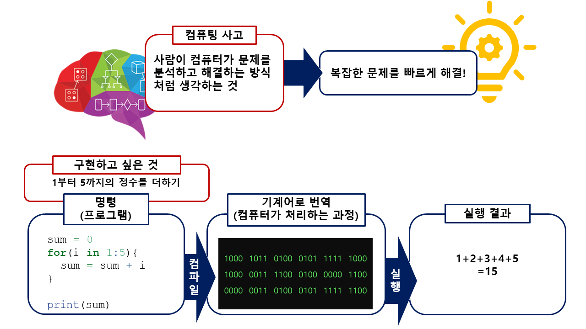

1. 파이썬 소개#
프로그래밍 (programming): 우리가 해결해야 할 문제를 컴퓨터가 처리할 수 있도록 문제해결 절차를 체계적으로 서술하는 과정.
프로그래밍 언어 (programming language): 컴퓨터가 어떤 작업을 수행하기 위한 프로그램을 작성하는 데 사용하는 언어.

이 과목에서 배울 파이썬은 범용 프로그래밍 언어로서 다음과 같은 중요한 특징이 있습니다.
파이썬은 인터프리터(interpreter) 언어입니다.
인터프리터는 말 그대로 해석하면 통역사, 연주자란 의미입니다. 이 의미에 따라서 설명하면 인터프리터는 인간의 언어를 컴퓨터에 번역하여 전달해서 곧바로 반응을 얻을 수 있다는 뜻입니다. 내가 편한 언어로 말하면 통역사가 알아서 번역하고 전달해서 상대방의 반응을 나의 언어로 곧바로 전달해 줍니다. 따라서 인터프리터는 사용하기 편한 언어란 의미입니다.
인터프리터가 아닌 언어(에를 들어 FORTRAN 이나 C 언어)들은 결과를 얻기 위해서 사용자가 몇 가지 절차(컴파일과 링크 단계)를 따로 수행해주어야 하는 방식이라서 사용하기 쉽지 않습니다.
파이썬 언어는 대화형으로 사용할 수 있습니다.
파이썬 언어는 대화형 방식으로 사용할 수 있습니다. 즉, 하나의 명령어를 입력하고 그 결과를 얻는 작업을 반복해서 사용할 수 있습니다. 다른 범용 언어들 중에는 대화형 방식을 사용할 수 없고 일련의 명령어들을 묶음으로 모아서 컴퓨터에 전달하는 방식으로만 사용할 수 있습니다. 대화형 방식은 여러분이 휴대용 계산기를 이용하는 방식과 유사하다고 할 수 있습니다. 하지만 대화형 방식이 여러분이 사용하는 문서편집기나 웹브라우저와 같이 메뉴와 버튼 방식은 아닙니다.
파이썬 언어를 가장 쉽게 사용할 수 있는 방법은 주피터 노트북(jupyter notebook)을 사용하는 방법입니다.
앞에서 말한 것과 같이 파이썬 언어는 메뉴와 버튼 방식을 이용하는 GUI(Graphical User Interface) 방식이 아니기 때문에 터미널(terminal) 환경에서 사용할 수 있습니다. 하지만 터미널 환경에서 사용하는 방법보다 훨씬 쉽고 간편하게 파이썬을 사용할 수 있는 방법이 주피터 노트북을 이용하는 것입니다.
주피터 노트북을 이용하는 방법은 다양하지만 이 과목에서는 Google 에서 제공하는 colab 을 이용할 것입니다. colab에 대한 소개는 여기에서 볼 수 있습니다.